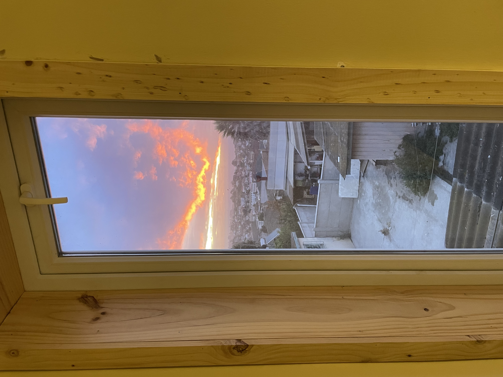
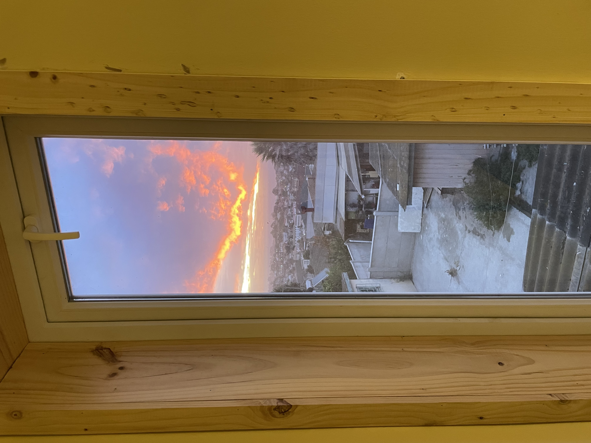
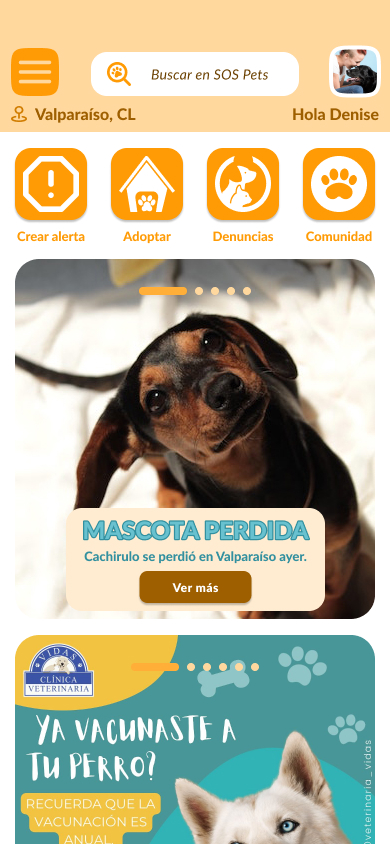

Jorge Garrido
Diseñador frontend,
Diseñador arquitectónico.
Soy un arquitecto con 15 años de experiencia que agregó el código a su toolkit.
Después de entender cómo funcionan los espacios físicos, aprendí a diseñar experiencias digitales con JavaScript, Node.js y Express, con conocimientos previos de UX/UI.
En Talento Digital construí una app de gestión de tareas que llevé hasta la nube, aplicando la misma lógica con la que proyecto edificios: estructura, función y experiencia.
Lo que ofrezco es único: puedo sentarme con ingenieros estructurales y con desarrolladores para juntos traducir necesidades del mundo físico a soluciones digitales.
Actualmente estoy en búsqueda de nuevos desafíos profesionales en PropTech, BIM o construcción, donde mi doble mirada genere valor real.
-
Lista de tareas
Minimalista y efectiva.
-
Esquemas de color exterior
Edificio La Fontana de Santa María.
-
Casa en San Antonio, Chile
Remodelación arquitectónica.
-
S.O.S. Pets
Proyecto UX/UI.
Lista de tareas
Minimalista y efectiva.
Una aplicación web multiplataforma diseñada como apoyo cognitivo sin distracciones. Frontend desplegado en GitHub Pages conectado a backend en Render con MongoDB, permitiendo sincronización entre dispositivos y soporte multiusuario. Interfaz austera construida con HTML, CSS y JavaScript vainilla, enfocada en organización diaria efectiva.
Vista previa de la aplicación:
Esquemas de color exterior
Edificio La Fontana de Santa María.
Construí un sitio web estático para presentar las opciones de color de pintura exterior para el edificio.
Vista previa del sitio web:
Casa en San Antonio, Chile
Remodelación arquitectónica.
Diseñé y construí la remodelación de mi casa en San Antonio. Apliqué criterios de eficiencia energética como: geometría compacta, envolvente continua, aislación exterior, ventanas de PVC y doble vidrio hermético, y el uso de madera reciclada en la construcción.
 

S.O.S. Pets
Proyecto UX/UI.
Basados en la metodología Design Thinking, y usando herramientas como cardsorting e inventario de contenidos, diseñamos la interfaz de usuario de S.O.S. Pets, aplicación móvil que cubre la primera necesidad de "crear alerta" para buscar una mascota perdida y que pueda volver a reencontrarse con su familia.
